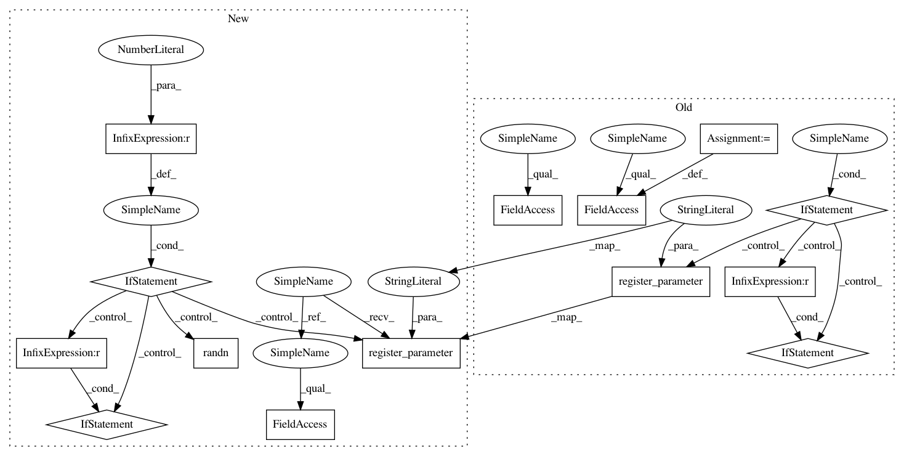

d44475866914c19f23c0f8a833951f9989250334,gpytorch/kernels/kernel.py,Kernel,__init__,#Kernel#Any#Any#Any#Any#Any#Any#Any#,88
Before Change
self.register_buffer("active_dims", active_dims)
self.ard_num_dims = ard_num_dims
self.batch_size = batch_size
self.__has_lengthscale = has_lengthscale
self._param_transform = param_transform
if has_lengthscale:
self.eps = eps
lengthscale_num_dims = 1 if ard_num_dims is None else ard_num_dims
self.register_parameter(
name="log_lengthscale", parameter=torch.nn.Parameter(torch.zeros(batch_size, 1, lengthscale_num_dims))
)
if lengthscale_prior is not None:
self.register_prior("lengthscale_prior", lengthscale_prior, lambda: self.lengthscale)
@property
def has_lengthscale(self):
return self.__has_lengthscale
After Change
method.
.. note::
The :func:`~gpytorch.kernels.Kernel.__call__` does some additional internal work. In particular,
all kernels are lazily evaluated so that, in some cases, we can index in to the kernel matrix before actually
computing it. Furthermore, many built in kernel modules return LazyTensors that allow for more efficient
inference than if we explicitly computed the kernel matrix itselfself.
As a result, if you want to use a :obj:`gpytorch.kernels.Kernel` object just to get an actual
:obj:`torch.tensor` representing the covariance matrix, you may need to call the
:func:`gpytorch.lazy.LazyTensor.evaluate` method on the output.
This base :class:`Kernel` class includes a lengthscale parameter
:math:`\Theta`, which is used by many common kernel functions.
There are a few options for the lengthscale:
* Default: No lengthscale (i.e. :math:`\Theta` is the identity matrix).
* Single lengthscale: One lengthscale can be applied to all input dimensions/batches
(i.e. :math:`\Theta` is a constant diagonal matrix).
This is controlled by setting `has_lengthscale=True`.
* ARD: Each input dimension gets its own separate lengthscale
(i.e. :math:`\Theta` is a non-constant diagonal matrix).
This is controlled by the `ard_num_dims` keyword argument (as well has `has_lengthscale=True`).
In batch-mode (i.e. when :math:`x_1` and :math:`x_2` are batches of input matrices), each
batch of data can have its own lengthscale parameter by setting the `batch_size`
keyword argument to the appropriate number of batches.
.. note::
The :attr:`lengthscale` parameter is parameterized on a log scale to constrain it to be positive.
You can set a prior on this parameter using the :attr:`lengthscale_prior` argument.
In pattern: SUPERPATTERN
Frequency: 3
Non-data size: 14
Instances
Project Name: cornellius-gp/gpytorch
Commit Name: d44475866914c19f23c0f8a833951f9989250334
Time: 2018-11-17
Author: balandat@fb.com
File Name: gpytorch/kernels/kernel.py
Class Name: Kernel
Method Name: __init__
Project Name: cornellius-gp/gpytorch
Commit Name: 2185f24dda7b33194d4240b2a6301230ce1cd7f5
Time: 2019-04-02
Author: jake.gardner@uber.com
File Name: gpytorch/kernels/spectral_mixture_kernel.py
Class Name: SpectralMixtureKernel
Method Name: __init__
Project Name: cornellius-gp/gpytorch
Commit Name: d44475866914c19f23c0f8a833951f9989250334
Time: 2018-11-17
Author: balandat@fb.com
File Name: gpytorch/kernels/kernel.py
Class Name: Kernel
Method Name: __init__
Project Name: cornellius-gp/gpytorch
Commit Name: 9c526695805c9639896b31364958d0e77bdeba62
Time: 2018-11-14
Author: gardner.jake@gmail.com
File Name: gpytorch/kernels/kernel.py
Class Name: Kernel
Method Name: __init__